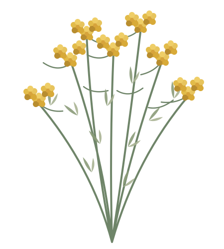

Regardez de plus près
Une photo suffit pour commencer à explorer les plantes du maquis.
LE MAQUIS À PORTÉE DE MAIN
Une promenade en Corse devient un carnet de découvertes. Photographiez une plante et laissez-vous guider.

01 / LE MAQUIS CORSEVOTRE COMPAGNON DE ROUTE
Une photo suffit pour commencer à explorer les plantes du maquis.
Caractéristiques, floraison ou légendes : choisissez ce qui vous intrigue.
Votre photo, votre lieu, votre histoire : chaque rencontre rejoint l'herbier.
VOTRE CARNET DE NATURE
Vos découvertes personnelles.
Prenez une photo pour commencer votre collection corse.
SUR LES SENTIERS DE CORSE
Retrouvez les plantes découvertes et les lieux où vous les avez croisées.
Les découvertes avec une position GPS apparaissent sur la carte.
NOUVELLE DÉCOUVERTE
Placez une feuille ou une fleur dans le cadre
Photographiez une plante ou choisissez une image depuis votre appareil.
Cette photo sera conservée sur votre carte de découverte après validation.
LE BERGER VOUS RACONTE
Que voulez-vous savoir ?
VOTRE HERBIER PERSONNEL
Connectez-vous pour garder vos découvertes privées sur tous vos appareils.
Le mode démo utilise une reconnaissance simulée et reste séparé de votre compte.